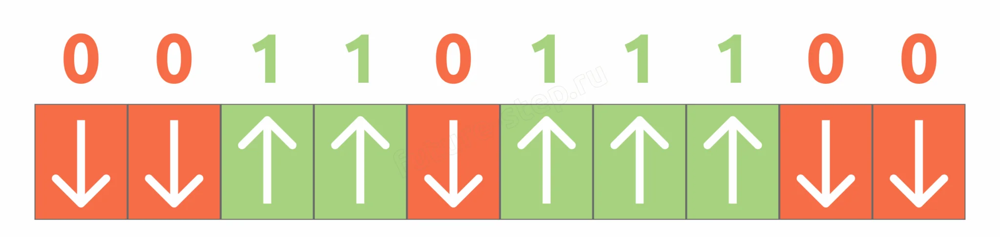
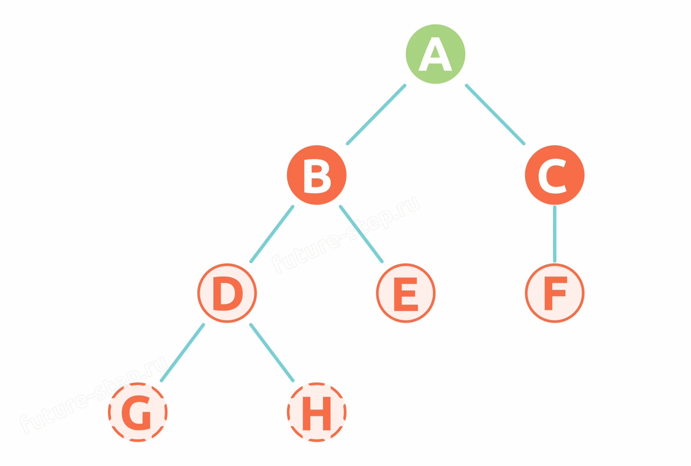
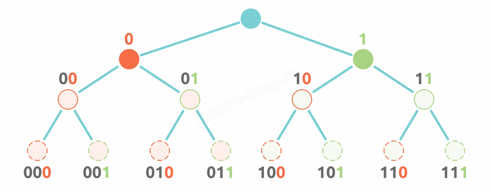
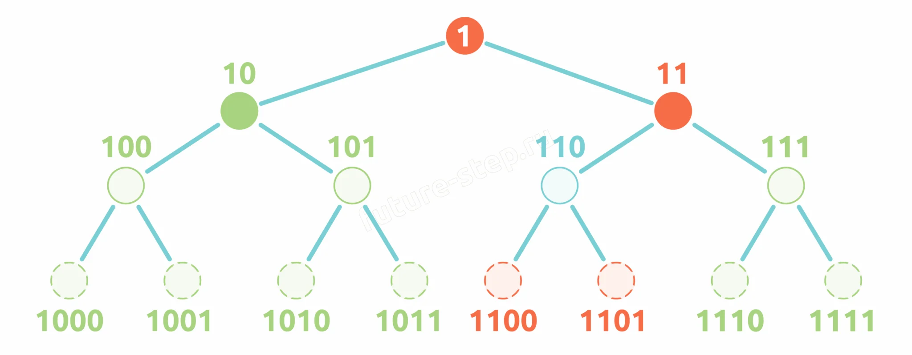
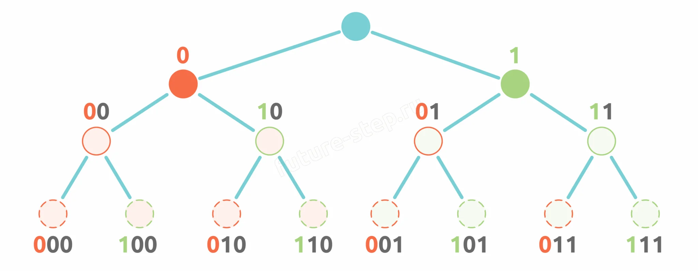
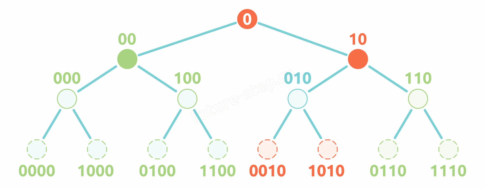

Аналоговый сигнал дискретизируется в 0 и 1
Теория · Как информация хранится в компьютере, кодирование и декодирование, условие Фано, двоичные деревья
Память компьютера — жёсткий диск, SSD, оперативная память — хранит данные только в двоичном виде. Любая информация (текст, изображения, звук) представлена последовательностью сигналов двух уровней: высокого и низкого. Эти сигналы интерпретируются как 0 и 1.
В HDD информация хранится на магнитных пластинах. Каждый бит представлен направлением вектора намагниченности микроскопического участка:

Поверхность пластины разбита на дорожки (концентрические окружности), дорожки — на сектора (минимальная единица чтения, обычно 512 или 4096 байт). Дорожки на разных пластинах, расположенные друг над другом, образуют цилиндры.
В твердотельных накопителях каждая ячейка памяти — транзистор, удерживающий заряд. Компьютер сравнивает напряжение с порогом:
💡 Главное: независимо от носителя, информация всегда сводится к последовательности нулей и единиц. Цифровой подход устойчив к помехам: пока сигнал выше или ниже порога, бит интерпретируется корректно.
Декодирование — процесс, обратный кодированию: преобразование закодированной информации (нулей и единиц) обратно в исходный вид (символы, текст, изображения).
Например, слово «Привет» в кодировке UTF-8:
Каждый блок из 8 бит — байт. Комбинации байтов кодируют конкретные символы. При выводе на экран компьютер декодирует эти байты обратно в текст.
⚠️ Декодирование возможно только при знании исходной кодировки. Если кодировка не совпадает — на экране появляются непонятные символы.
Однозначное декодирование — свойство кода, при котором каждая последовательность битов соответствует ровно одному символу или сообщению, без двусмысленности.
A → 0, Б → 10, В → 11. Последовательность 010 расшифровывается однозначно: 0 → A, 10 → Б. Результат: АБ.
A → 0, Б → 01, В → 1. Последовательность 011 может быть расшифрована как АВВ (0-1-1) или БВ (01-1). Однозначное восстановление невозможно.
Все символы кодируются одинаковым количеством битов. Просто реализовать, удобно для передачи данных, но неэффективно по памяти: редкие символы занимают столько же места, сколько частые.
Символы имеют разную длину кода в зависимости от частоты. Частые символы — короткий код, редкие — длинный. Экономит память, но требует защиты от неоднозначности.
A (частый) → 1 бит, B → 2 бита, C (редкий) → 3 бита.
Сообщение «ACABAB»: неравномерным кодом — 10 бит, равномерным (по 3 бита) — 18 бит. Экономия почти вдвое!
Условие Фано (прямое): никакое кодовое слово не может быть началом другого кодового слова.
Обратное условие Фано: никакое кодовое слово не может быть концом другого кодового слова.
Соблюдение условия Фано гарантирует однозначное декодирование даже при неравномерном кодировании. Компьютер всегда знает, где заканчивается один символ и начинается следующий.
А → 0, Б → 01. Код «А» (0) является началом кода «Б» (01). Последовательность 01 невозможно декодировать однозначно.
💡 Код, удовлетворяющий условию Фано, называется префиксным. Код, удовлетворяющий обратному условию — постфиксным. В задании 4 ЕГЭ используются оба варианта.
Двоичное дерево — структура данных, где каждый узел имеет не более двух потомков. Левая ветвь условно считается «0», правая — «1». Путь от корня до узла даёт его двоичный код.

Дописываем новые значения в конец кода. Левая ветвь — добавляем 0, правая — добавляем 1.

Если код «110» уже занят, то недоступны:

Дописываем новые значения в начало кода.

Если код «010» уже занят, то недоступны:

📌 Алгоритм для задания 4: строим двоичное дерево, исключаем занятые коды и их предков/потомков (в зависимости от прямого или обратного условия Фано), находим свободные коды нужной длины. Подробный разбор — в разделе «Практика».